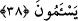

secde, ibâdet mertebelerinin zirve noktasıdır. Öyle ise secde yalnız Allah’a tahsis
edilmelidir. Belki de yıldızlara tapan bazı Sabiîler gibi birtakım insanlar, güneş ve aya
secde etmeyi Allah’a secde etmek zannediyorlardı. Bu âyetle Allah ile araya böyle bir
vasıtanın konulması yasaklanmış ve bütün eşyayı yaratan Allah’a secde emrolunmuş
oldu.
Şâyet, “Secde ânında güneşin insanlara kıble olması niye câiz olmasın?” gibi bir şey
sorulursa, şöyle deriz: Güneş insanların maslahat ve menfaatlerine yönelik yaratılan ve
dünyayı aydınlatan pek yüce bir cevherdir. Şâyet namazda güneşin kıble oluşuna izin
verilip rükû ve secdede güneşe dönülürse, bazı insanlar, bu rükû ve secdenin Allah’a
değil güneşe yapıldığını zannederler.
Fakat muayyen taşlar böyle değildir. Bunların kıble olarak tespit edilmesinde her
hangi bir ulûhiyet anlayışı ve bir zihin karmaşası söz konusu değildir.
Bir hadîs-i şerîf’te şöyle denilmiştir: “Ümmetimde riyâ ve gösteriş yoktur. Olsa da
amellerle ilgili olur. İmâna gelince, îmân onların kalplerinde dağlar gibi sâbittir.
Kibre gelince, onlardan biri secde ederek alnını yere koyunca, kibirden kurtulmuş
olur.”
38. Eğer insanlar büyüklük taslarlarsa (bilsinler ki) Rabbinin yanında bulunan
(melekler) hiç usanmadan, gece gündüz O’nu tesbih ederler.
“Eğer insanlar” Allah’tan başkasına secdeyi terk husûsunda senin emrine uymaktan
“büyüklük taslarlarsa”; güneş ve ay gibi unsurlara secde ederek onları aracı yapmakta
ısrar ederlerse, bu durum Allah’a ihlaslı olarak ibâdet edenlerin sayısını hiç de
azaltmaz. Bilsinler ki “Rabbinin yanında bulunan” Allah katında mânen Allah’a
yaklaştırılmış olan mukarreb melekler, “hiç usanmadan, gece gündüz” devamlı olarak,
her zaman “O’nu tesbih ederler.” Ortaklardan ve Allah’ın şânına yakışmayan her
şeyden onu tenzîh ederler. Onlar ibâdetin çokluğu, duâ ve yakarışın fazlalığı sebebiyle
bezginlik ve yorgunluk hissetmezler.
Buradan şu anlaşılmaktadır: Allah’a ihlâslı olarak ibâdet diğer kullarda da mevcud
olmakla beraber burada sâdece meleklerin bu işe tahsis edilmesi, sayılarının
çokluğundandır. Ayrıca melekler, güneş ve aya yapılan ibâdeti kıskançlık duygusuyla
reddedip ibâdeti Allah’a tahsis ederler. Onlar hiç usanmazlar. “Seâmet”, “yorulma,
usanma” demektir. Yani melekler tesbih ve ibâdetten geri kalmaz ve yorulup usanmazlar.
Çünkü meleklerin tesbihleri insanların nefes almaları gibi tabiî bir durumdur.
Abdülazîz Mekkî bu âyetle ilgili olarak şu tesbihâtı tavsiye etmiştir: “Zâtını
tanıyanın, zikrinden usanmayacağı Allah ne yücedir. Kendisiyle dostluk ve ünsiyet